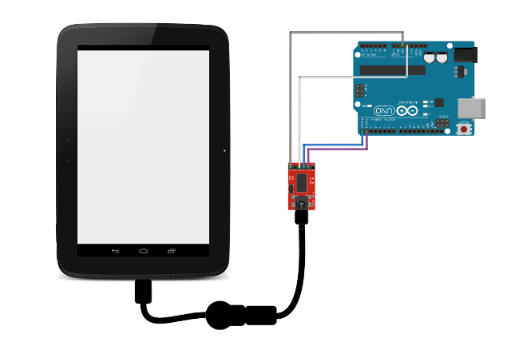

risorse | connessione usb arduino nano/android
Attenzione: ho posto la massima cura ed attenzione nel redigere questi appunti; declino tuttavia ogni responsabilità per eventuali imprecisioni, errori od omissioni, così come declino ogni responsabilità per eventuali danni a cose, proprietà o persone derivanti dall’uso di questi contenuti.
A settembre 2019 un'ingegnere olandese mi ha contattato riguardo alla classe UsbPort descritta in “Comunicazione seriale Arduino/Android via USB”. In particolare voleva sapere se era in grado di far comunicare un terminale Android con una scheda Arduino Nano.
Stupito dal fatto che si fosse indirizzata verso la mia implementazione e non avesse invece optato per una delle tante soluzioni disponibili in rete, molte delle quali gratuite e aperte, ingenuamente le ho detto che non vedevo motivi per cui la cosa non dovesse funzionare.
Ignoravo però che Arduino Nano non usa un ATmega8 per controllare la porta USB, bensì il chip FTDI FT232RL (cfr. ad esempio comprehensive list of Uno Rev. 3 USB vendor/product IDs?). Questo chip non si presenta sul bus USB come un dispositivo CDC, per cui il mio codice non è in grado di stabilire una connessione con tale scheda.
L'ingegnere si è ben presto resa conto del problema e mi ha chiesto consiglio su come procedere. A me sono venute in mente tre possibilità:
usare/trarre ispirazione da una delle librerie esistenti
Di progetti a riguardo in rete ce ne sono diversi, un esempio su tutti è la classe FTDriver.java dell'omonima liberia, che supporta diverse varianti della scheda Arduino, tra cui la Uno e la Nano. Scorrendo il codice si nota come le due tipologie di dispositivi — CDC vs. FT — sono gestite separatamente (cfr. flag isCDC). Se non si è interessati alla prima classe di dispositivi, si può sempre estrarre il codice relativo alla seconda. Un altro progetto molto interessante che val la pena considerare è usb-serial-for-android.
usare la libreria D2XX sviluppata dal produttore del chip FT232RL
Si tratta di una libreria Java che offre un'API di accesso alle funzionalità del chip. Il fatto di essere sviluppata dal produttore del chip dovrebbe garantirne stabilità e robustezza (il condizionale è d'obbligo!). La libreria, scaricabile gratuitamente dal sito ufficiale di FTDI alla pagina FTDI Android Java D2XX Prjects, è corredata da un congruo numero di esempi di casi d'uso. Gli applicativi dimostrativi sono descritti in dettaglio nella nota tecnica TN_147_Java_D2xx_for_Android.pdf.
usare l'interfaccia UART presente in “Android Things”
Se si opta per questa soluzione, tenere conto che l'interfaccia è disponibile solo in Android 8.1 e versioni successive. La documentazione relativa si trova nella guida ufficiale degli sviluppatori. Non l'ho mai usata, mi riservo di valutarla in futuro.
Ricordando di aver a disposizione un convertitore USB/Seriale TTL basato proprio sul chip FT232RL di FTDI (cfr. “Test del chip FT232RL con Arduino”) ho deciso di provare io stesso a far comunicare un terminale Android con un altro dispositivo a valle del chip FTDI. Non avendo altro a disposizione che una scheda Arduino Uno, ho deciso di affrontare il problema secondo lo schema:
+---------+ +---------+
| | +---------+ | |
| Android | <===> | FT232RL | <===> | Arduino |
| | +---------+ | |
+---------+ +---------+
Al solito, su Arduino ho caricato il programma echo:
void setup() {
Serial.begin(57600);
}
void loop() {
while (Serial.available() > 0)
Serial.print((char)Serial.read());
}
In questo modo mi aspetto che l'app riceva come risposta da parte di Arduino esattamente gli stessi caratteri che gli ha inviato attraverso l'interfaccia USB/Serial TTL. Relativamente alle connessioni, il terminale Android è collegato all'interfaccia attraverso un cavo USB OTG in cascata ad un normale cavo USB. L'interfaccia è collegata ad Arduino con 4 cavetti dupont, due per l'alimentazione (grigio GND, bianco 5V), due per i dati (blu TX, viola RX).
Schema delle connessioni
Il circuito di prova reale – il cavo USB più corto è quello OTG
L'app di prova consta di un'unica attività con un campo EditText (cfr. id editText) che contiene il testo da inviare ed un pulsante al quale è associato il codice seguente:
/**
* Called when the user taps the Send button
*/
public void sendMessage(View view) {
EditText editText = (EditText) findViewById(R.id.editText);
String message = editText.getText().toString();
StringBuilder log = new StringBuilder();
try {
D2xxManager ftdid2xx = D2xxManager.getInstance(this);
int devCount = ftdid2xx.createDeviceInfoList(this);
log.append(String.format("devCount = %d\n", devCount));
if (devCount > 0) {
FT_Device device = ftdid2xx.openByIndex(this, 0);
if (device != null) {
// device.setDtr();
// device.setRts();
device.setBaudRate(57600);
device.setDataCharacteristics(
D2xxManager.FT_DATA_BITS_8,
D2xxManager.FT_STOP_BITS_1,
D2xxManager.FT_PARITY_NONE);
byte[] txBuffer = message.getBytes();
int writtenBytes = device.write(txBuffer, message.length(), true);
log.append(String.format("txBuffer: \"%s\"\n", message));
log.append(String.format("writtenBytes: %d\n", writtenBytes));
int readBytes = 0;
byte[] rxBuffer = new byte[txBuffer.length];
while (readBytes == 0)
readBytes = device.read(rxBuffer, rxBuffer.length, 100);
log.append(String.format("readBytes: %d\n", readBytes));
log.append(String.format(
"rxBuffer: \"%s\"\n", new String(rxBuffer, 0, readBytes)));
// device.clrRts();
// device.clrDtr();
device.close();
} else {
// TODO
}
}
} catch (D2xxManager.D2xxException e) {
// TODO
}
new AlertDialog.Builder(this)
.setTitle("Test FT232RL")
.setMessage(log.toString())
.setPositiveButton(android.R.string.yes, null)
.show();
}
Sebbene il codice non sia affatto robusto — ne sconsiglio fortemente l'uso in contesti reali: non gestisce gli errori e assume che le chiamate read e write trasferiscano in un colpo solo tutti i caratteri in gioco, cosa non necessariamente vera — ha dato buona prova di sè nei pochi e limitati test che ho condotto:
Tutte le trasmissioni effettuate hanno avuto esito positivo
La libreria j2xx.jar si trova nella cartella libs dell'archivio sopra indicato. Ricordarsi di copiarla nella cartella app/libs locale e di aggiungerla come dipendenza del progetto (menu File, Project Structure, Dependencies, +).
La documentazione d'uso della libreria si trova nella cartella doc dell'archivio, a partire dal file index.html.
Pagina modificata l'08/10/2019